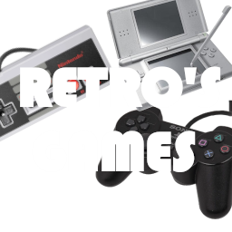

¿Quiénes Somos?
Retro's Games es una tienda dedicada a mantener viva la esencia de una generación dorada de videojuegos. Nos especializamos en la venta de consolas y juegos de séptima generación, una época que marcó a millones de jugadores en todo el mundo.
Aquà encontrarás una cuidada selección de tÃtulos y sistemas icónicos como Nintendo Wii, PlayStation 3, Xbox 360, PlayStation Portable (PSP) y Nintendo DS. Nuestro objetivo es ofrecerte una experiencia auténtica, ya sea que estés buscando revivir tus aventuras favoritas o descubrir por primera vez los clásicos que definieron una era.
¿Qué nos diferencia?
🮠Productos originales y probados
🕹️ Consolas restauradas y listas para jugar
💾 Juegos con historia y mucha nostalgia
💬 Atención personalizada y asesoramiento gamer
En Retro's Games, no solo vendemos videojuegos: compartimos una pasión. Creemos que jugar es volver a sentir, recordar y disfrutar, y por eso trabajamos para que cada cliente se lleve no solo un producto, sino una experiencia que lo conecte con lo mejor del gaming retro.
¡Bienvenido a tu zona de juego favorita del pasado!